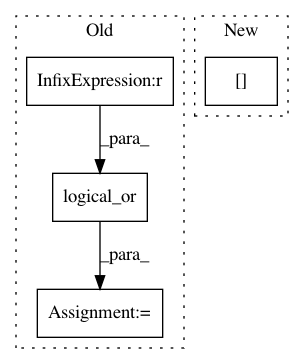

405f7b2f686fb02713cede4fc1b03c249bf6898f,numerai/data.py,Data,cv,#Data#Any#Any#,70
Before Change
dtrain = self[idx]
idx = np.zeros(self.size, dtype=np.bool)
for i in test_index:
idx = np.logical_or(idx, era == eras[i])
dtest = self[idx]
yield dtrain, dtest
def to_hdf(self, path_or_buf, **kwargs):
After Change
kf = KFold(n_splits=kfold, shuffle=True, random_state=random_state)
eras = self.era_dh.unique()
for train_index, test_index in kf.split(eras):
idx = self.df.era.isin(eras[train_index])
dtrain = self[idx]
idx = self.df.era.isin(eras[test_index])
dtest = self[idx]
In pattern: SUPERPATTERN
Frequency: 3
Non-data size: 4
Instances
Project Name: kwgoodman/numerox
Commit Name: 405f7b2f686fb02713cede4fc1b03c249bf6898f
Time: 2017-10-20
Author: kwgoodman@gmail.com
File Name: numerai/data.py
Class Name: Data
Method Name: cv
Project Name: scikit-learn-contrib/imbalanced-learn
Commit Name: aa6af82f458acf3f853e5174d34b11d319eea1c0
Time: 2016-06-17
Author: victor.dvro@gmail.com
File Name: unbalanced_dataset/under_sampling/instance_hardness_threshold.py
Class Name: InstanceHardnessThreshold
Method Name: transform
Project Name: nilearn/nilearn
Commit Name: 987a4a93f98eec5f69c34d62ab92b6e63d5c07bb
Time: 2017-11-16
Author: emd222@cornell.edu
File Name: examples/02_decoding/plot_haxby_anova_svm.py
Class Name:
Method Name: